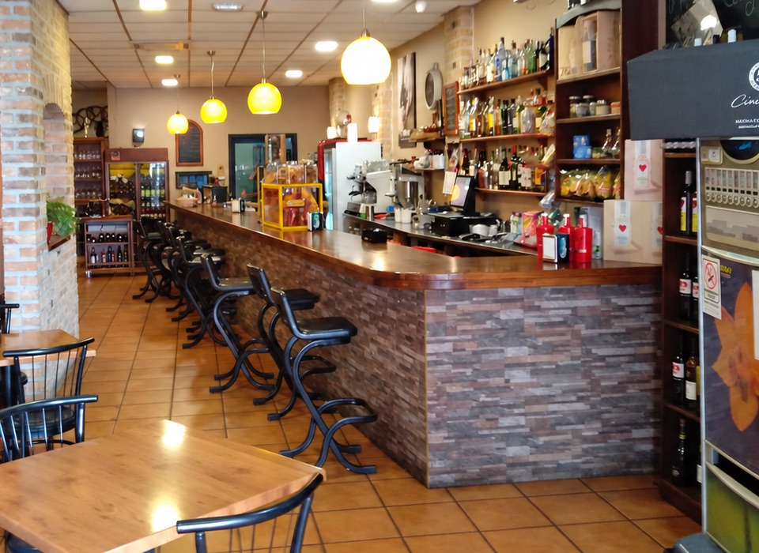
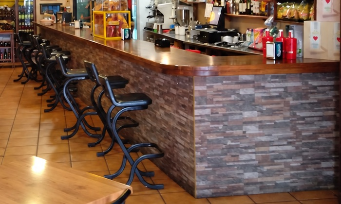
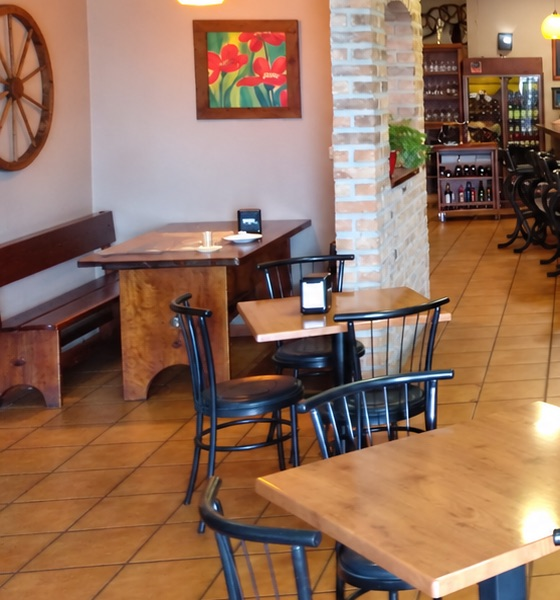
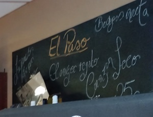

Tasca · Cafetería/Los Majuelos · La Laguna
El PasoTasca Cafetería El Paso
El capuchino especial de Miguel, una tortilla de papas que la gente recomienda por escrito y una barra larga de piedra y madera, en plena avenida El Paso.
02Lo que dicen
Aquí se viene por la tortilla.
Y se vuelve por Miguel.
La tortilla de papas está muy muy buena!! Genial la atención!!
Muy rico y muy bonito. Muchas gracias a Miguel por capuchino especial.
Los empleados son maravillosos. Cercanía, profesionalidad etc. La comida de 10.
Grandes camareros, muy buenos profesionales, en especial Migue y Carlos. Da gusto ir a tomarte algo.
El local es acogedor, el servicio es atento y cercano. La comida es espectacular, tienen buenos dulces.
Personal profesional, serio y responsable, lugar amplio y buen café.
Nada más llegar […] el buen trato y atendimiento por parte de su camarero Miguel.
Buen servicio cuando está Miguel y Carlos.
03La casa
Un bar de los de toda la vida, con sitio para sentarse.
Una barra larga forrada de piedra, sobremesa de madera y taburetes en fila. Encima, lámparas de globo color ámbar; al fondo, la bodega y la pizarra con letra de tiza.
Al otro lado, mesas de madera, bancos corridos y una vieja rueda de carro en la pared. Sitio amplio para el café de la mañana, el almuerzo o una tapa al caer la tarde.
- Se aceptaTarjeta
- AmbienteDe barrio
- ParaDesayuno · tapas · almuerzo



- Dirección
- Avenida El Paso, Los Majuelos
38108 San Cristóbal de La Laguna
Tenerife - Teléfono
- 601 54 08 56
- Horario
- Llámanos y te lo decimos: 601 54 08 56